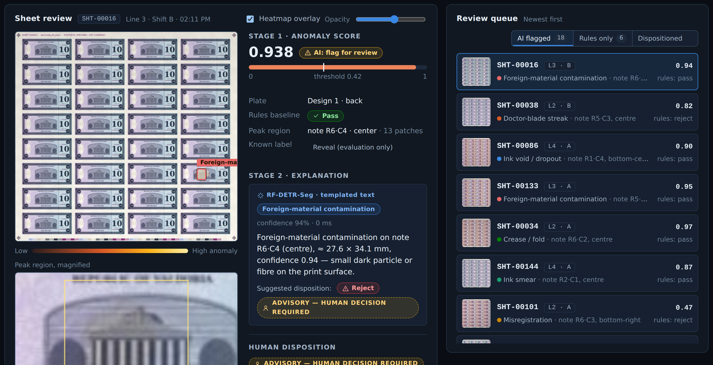

A flagged sheet for review. The stage-1 heatmap shows the anomaly on one note. Below the sheet, the peak region shows at a larger size. Stage 2 identifies the defect type and recommends a disposition. This recommendation has the label Advisory, human decision required. The inspector confirms the defect, overrides it, or sends the sheet to re-inspection. The audit trail records this decision. The review queue on the right also shows sheets that the legacy rules rejected and the AI passed. The inspector can examine these possible false rejects.
| Layer | Component | Version / tag | License | Role in the demo |
|---|---|---|---|---|
| AI models · open weights, local | ||||
| LLM, big tier | OpenAI gpt-oss-20b | openai/gpt-oss-20b | Apache-2.0 | Answers when the evidence is weak; chat, SQL |
| LLM, small tier | Google Gemma 4 E4B | ollama gemma4:latest | Apache-2.0 | Answers when the evidence is strong |
| Embedding | NVIDIA llama-nemotron-embed-1b-v2 | HF, cached | NVIDIA Open Model | Finds similar tickets; gives data to the router |
| Reranker | NVIDIA llama-nemotron-rerank-1b-v2 | HF, cached | NVIDIA Open Model | Puts the fused results in a new order |
| Detector | RF-DETR-Seg, fine-tuned S / M | rfdetr 1.11.2 | Apache-2.0 | Finds 8 defect types; fixed SHA-256 weights |
| Anomaly | PatchCore, wide_resnet50_2 backbone | anomalib 2.7.0 | Apache-2.0 | Gives the stage-1 score and heatmap |
| VLM | Qwen3-VL-8B-Instruct + LoRA | TRL / PEFT | Apache-2.0 | Planned: explains flagged sheets |
| Serving and runtime · containers | ||||
| LLM serving | vLLM, OpenAI-compatible server | vllm-openai:v0.29.0 | Apache-2.0 | Serves gpt-oss-20b with prefix caching |
| LLM serving | Ollama | ollama:0.40.0 | MIT | Serves gemma4; loads it only when necessary |
| RAG API | FastAPI, Uvicorn, Pydantic | 0.142.4 / 0.54.0 / 2.13.5 | MIT / BSD-3 | Operates itsm-rag-server on :8030 |
| Web | nginx + first-party vanilla-JS UI | nginx:1.27-alpine | BSD-2 | Serves the UI on :8080; no third-party JS |
| Vision stream | NVIDIA DeepStream (Triton, TensorRT) | 9.0 sbsa-dgx-spark | NVIDIA DeepStream | Planned: line runtime with TensorRT |
| Messaging | Eclipse Mosquitto (MQTT) | eclipse-mosquitto:2 | EPL-2.0 | Planned: sends detections to the results API |
| Frameworks and MLOps · Python 3.12 | ||||
| ML core | PyTorch (CUDA 13.0), torchvision | 2.14.1 / 0.29.1 | BSD-3 | Operates the models on the Blackwell GPU |
| NLP | Transformers, sentence-transf., tokenizers | 5.19.0 / 6.1.0 / 0.23.2 | Apache-2.0 | Loads the Nemotron embed and rerank models |
| Classic ML | scikit-learn, NumPy, SciPy | 1.9.1 / 2.4.6 / 1.18.1 | BSD-3 | Ticket router, retrieval calculations, metrics |
| Vision libs | timm, Lightning, OpenCV, SAHI | 1.0.31 / 2.6.6 / 4.14 / 0.14 | Apache-2.0 / MIT | Backbones, training, image operations, tiles |
| MLOps | MLflow, FiftyOne | 3.18.0 / 1.22.1 | Apache-2.0 | Records runs, keeps models, shows errors |
| Data and platform | ||||
| Data | it-tickets, synthetic_print generators | in repo | first-party | All data is synthetic: no CUI, PII or real currency |
| Host | Dell Pro Max GB10 (Grace Blackwell, 128 GB) | arm64 · DGX OS | n/a | Operates the full stack; also operates on x86_64 |
Deploy. The command docker compose up -d --build starts four containers: webapp, rag, vllm and ollama.
The first start downloads the open-weight models into Docker volumes. After the first start, the stack operates offline.
It does not call external APIs.
Supply chain. The file requirements.txt fixes the version of each Python dependency. Each container image has a
fixed tag. The file cv_model/artifacts.lock also records the digest of each CV image and weight file. The repository
contains the gpt-oss tokenizer vocabulary. Thus, inference does not download files.